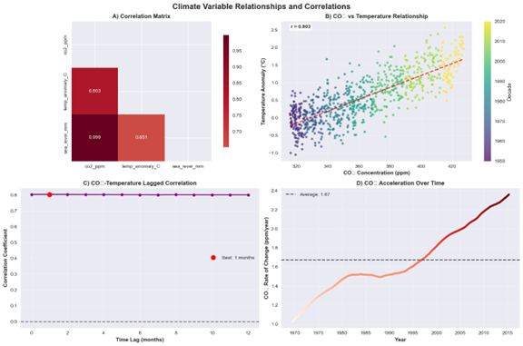
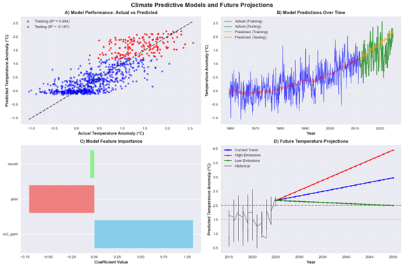

This project investigates the relationship between atomspheric CO2, global temperature anomalies,
and sea level rise using over a century of NASA and NOAA climate data. It combines
time-series analysis, regression modeling, and scenario-based projections to
forecast potential future outcomes.
📈 Data Sources
NASA GISS Global Surface Temperature Anomalies Dataset
Mauna Loa Atmospheric CO2 Concentrations (NOAA)
Global Mean Sea Level Rise (CSIRO + NASA JPL)
🧪 Methods
Exploratory data analysis of over 100 years of climate observations
Lagged correlation analysis between CO2 concentration and temperature anomalies
Figure 1: Long-term trends from 1880 to 2025 for: CO₂ concentration rising steadily at +1.67 ppm/year,
global temperature anomalies rising at +0.0123°C/year, and sea level rise increasing at +0.70 mm/year.

Figure 2: A multi-part correlation and lag analysis with: a correlation matrix highlighting the strong correlation between CO2 and temperature,
lagged correlation with the strongest link occurring at 1-month, a scatterplot showing the relationship between CO2 and temp by decade,
and accelation rate of CO2 post-1970.

Figure 3: Predictive model metrics including: regression performance showing training R2 = 0.484 and negative R2 on testing (-0.187) suggesting overfitting,
feature importance emphasizing CO2 as a key predictor, and model projections illustrating temperature increases under various emission scenarios (high emissions producing steep upward trajectories).